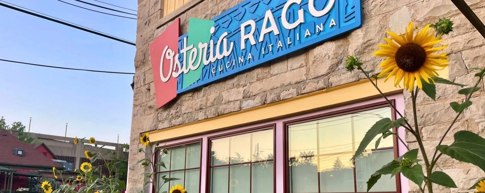

House-made pasta
Crafted fresh daily with locally sourced, organic ingredients: spaghetti, cacio e pepe, carbonara, gnocchi and ravioli.
Italian · Bloomington, IN

419 E Kirkwood Ave, Bloomington, IN 47408
An 1880s carriage house off Kirkwood. House-made pasta and wood-fired pizza.
From the kitchen
Seasonal, intentional and made to share, in the words of the house.
Crafted fresh daily with locally sourced, organic ingredients: spaghetti, cacio e pepe, carbonara, gnocchi and ravioli.

Neapolitan style from the wood-fired oven, plus a pizza of the month. Ask your server what it is.

Meatballs, burrata, lasagna and chicken Marsala.



4.5 ★ · 712 Google reviews
Hidden gem alert! Wow. A must stop. Back in the alley. Amazing staff so friendly, Suzanne. Meatballs and burrata appetizer amazing. Pizza was delicious. Chicken parm was crispy and amazing.
Amazing as always! We had the shrimp risotto balls for appetizer and the pizza of the month with a Sauvignon Blanc and a fig cannoli to finish. Yum :D
Make reservations and know the food is worth the wait. Off Kirkwood, unassuming, and anything but pretentious. When you enter Osteria Rago, you’re greeted with a smile and a request, “what’s the reservation?” You’ll need one.

Our story
In Italy, the traditional eating spots hide in narrow alleys. Osteria Rago keeps that spirit in a converted 1880s carriage house, just west of the IU Sample Gate.
Since 2018, a busy, murmuring room where you can watch the chefs slice meats and prepare each order.
Visit
419 E Kirkwood Ave, Bloomington, IN 47408
Tuesday to Saturday, 11am to 9pm. Happy hour Tuesday to Friday, 1pm to 4pm. Large groups: call ahead.